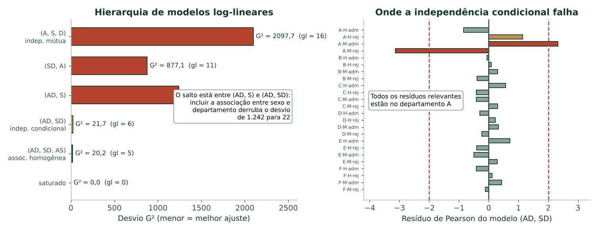
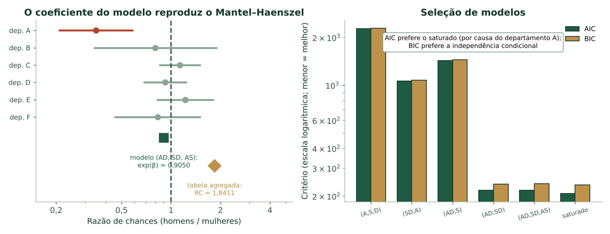

Análise log-linear
Modela o logaritmo das contagens de uma tabela de contingência, permitindo descrever padrões de associação em três ou mais vias.
Comece por aqui
A análise log-linear trata as contagens de uma tabela de contingência como variável resposta e modela o seu logaritmo como uma função dos fatores de classificação. É o que permite ir além do qui-quadrado de independência: com três ou mais variáveis, as perguntas se multiplicam — quais variáveis estão associadas, e a associação entre duas delas muda quando se condiciona a uma terceira?
Cada termo do modelo corresponde a uma associação que se decide manter ou descartar. "Sem o termo sexo:admissão" significa "sexo e admissão são independentes, dadas as outras variáveis do modelo". Comparar dois modelos que diferem por um termo é, portanto, testar essa associação específica.
O que é a análise log-linear
Seja \(m_{ijk}\) a contagem esperada na célula \((i,j,k)\) de uma tabela de três vias. O modelo saturado escreve o logaritmo dessa contagem como uma soma de efeitos:
Cada modelo de interesse se obtém zerando um subconjunto desses termos. Zerar os três termos de interação de segunda ordem e o de terceira dá independência mútua; manter apenas \(\lambda^{AD}\) e \(\lambda^{SD}\) dá independência entre A e S dado D; manter os três de segunda ordem e zerar o de terceira dá associação homogênea — a associação entre A e S existe, mas é a mesma em todos os níveis de D.

Um modelo log-linear é uma regressão de Poisson em que a resposta é a contagem da célula e os preditores são os fatores de classificação e suas interações. No R, as duas coisas se escrevem com a mesma chamada a glm(..., family = poisson). A diferença é só de propósito: na regressão de Poisson o interesse está nos coeficientes; aqui, na estrutura de associação que cada conjunto de termos descreve.
Pressupostos e como verificá-los
| Pressuposto | Por que importa | Como verificar |
|---|---|---|
| Observações independentes | Cada unidade entra em uma única célula. | Delineamento. |
| Contagens, não proporções | O modelo é para frequências absolutas. | Natureza dos dados. |
| Classificação exaustiva e exclusiva | Toda unidade cai em exatamente uma célula. | Soma das células = n. |
| Contagens esperadas suficientes | G² e X² são assintóticos. | Esperadas ≥ 5 na maioria das células; nenhuma abaixo de 1. |
| Modelo hierárquico | Facilita a interpretação dos termos. | Inclua um termo só com todos os seus termos de ordem inferior. |
| Ausência de superdispersão estrutural | O modelo de Poisson assume média = variância. | Compare G² com os graus de liberdade; zeros estruturais exigem tratamento especial. |
Uma célula com contagem zero por acaso (zero amostral) é tratada normalmente: o modelo lhe atribui uma contagem esperada positiva. Uma célula impossível por definição (zero estrutural — "homens com câncer de ovário") precisa ser excluída do ajuste, reduzindo os graus de liberdade. Confundir as duas coisas produz desvios inflados e estimativas sem sentido.
Hipóteses e estatística de teste
Não há uma única hipótese: há uma por termo. Cada comparação entre dois modelos encaixados testa a hipótese de que os termos presentes no maior e ausentes no menor são todos nulos.
Em que:
- \(n_c\)
- contagem observada na célula \(c\)
- \(\hat m_c\)
- contagem ajustada pelo modelo
- \(\nu\)
- graus de liberdade: número de células menos número de parâmetros estimados
- \(\Delta G^2\)
- diferença de desvios entre dois modelos encaixados
Exemplo numérico, passo a passo
| Modelo | Significado | gl | G² | X² | p |
|---|---|---|---|---|---|
| (A, S, D) | Independência mútua | 16 | 2 097,67 | 2 000,33 | < 10⁻³⁰⁰ |
| (AD, S) | A e D associados; S independente | 11 | 1 242,35 | 1 078,07 | 1,2 × 10⁻²⁵⁹ |
| (SD, A) | S e D associados; A independente | 11 | 877,06 | 797,71 | 5,3 × 10⁻¹⁸¹ |
| (AD, SD) | A e S independentes dado D | 6 | 21,74 | 19,94 | 0,00135 |
| (AD, SD, AS) | Associação homogênea | 5 | 20,20 | 18,82 | 0,00114 |
| (AD, SD, AS, ASD) | Saturado | 0 | 0,00 | 0,00 | — |
A pergunta "existe associação entre sexo e admissão, controlando o departamento?" é a pergunta sobre o termo A:S. Ela se responde comparando o modelo sem ele, (AD, SD), com o modelo que o inclui, (AD, SD, AS):
Não há evidência de associação entre sexo e admissão depois de controlar o departamento. O coeficiente do termo A:S no modelo homogêneo é −0,0999, e
que é a razão de chances comum aos seis departamentos — praticamente idêntica à estimativa de Mantel–Haenszel, 0,9047, obtida na ficha do qui-quadrado de independência para os mesmos dados.
Propriedades
- Com dois fatores, o modelo (A, S) reproduz exatamente o qui-quadrado de independência: o \(X^2\) do modelo log-linear de independência é a estatística de Pearson.
- Os modelos formam uma hierarquia, e a diferença de desvios entre dois modelos encaixados é assintoticamente qui-quadrado com graus de liberdade iguais à diferença de parâmetros.
- Os termos de interação são logaritmos de razões de chances: \(\lambda^{AS}\) na parametrização de efeitos é o log da razão de chances comum.
- Em um modelo hierárquico ajustado por máxima verossimilhança, as margens correspondentes aos termos incluídos são reproduzidas exatamente pelas contagens ajustadas.
- O modelo saturado tem zero graus de liberdade e reproduz os dados, por isso \(G^2=0\).
- Colapsar uma variável só é legítimo quando ela é independente de ao menos uma das outras duas; do contrário o colapso distorce a associação.
Como interpretar os resultados
| Elemento | O que informa | Cuidado |
|---|---|---|
| Residual deviance (G²) | Falta de ajuste do modelo. | Comparar com os graus de liberdade. |
| Diferença de desvios | Teste de um termo específico. | Só vale entre modelos encaixados. |
| Coeficientes de interação | Logaritmos de razões de chances. | Dependem da parametrização dos contrastes. |
| Resíduos de Pearson | Onde o modelo falha. | Examine célula por célula. |
| AIC / BIC | Compromisso entre ajuste e parcimônia. | Podem discordar; declare o critério usado. |
| Mosaico sombreado | Mapa visual dos resíduos. | A leitura rápida mais útil. |
Somando sobre os departamentos, a taxa de admissão é de 44,5% para homens e 30,4% para mulheres, e o qui-quadrado da tabela agregada dá 92,2 com p = 7,8 × 10⁻²². Controlando o departamento, a associação desaparece (p = 0,216) e a razão de chances comum é 0,905. A razão é que departamento está associado às duas variáveis: as mulheres se candidataram mais aos departamentos competitivos. Os modelos (AD, S) e (SD, A), com G² de 1 242,4 e 877,1, confirmam essa dupla associação — e é ela que torna o colapso ilegítimo.
Como executar no R e em Python
Onde executar o código em Python
Não é preciso instalar nada: o Google Colab é um computador na nuvem, gratuito, que executa Python pelo navegador e já traz as bibliotecas usadas aqui (numpy, scipy e matplotlib).
Há dois caminhos no R. O moderno é glm(n ~ ..., family = poisson) sobre a tabela em formato longo, que dá acesso a anova(), step(), AIC() e aos resíduos. O clássico é loglin(tabela, margin = list(...)), que trabalha direto com o array e especifica o modelo pelas margens a reproduzir. Para os gráficos, vcd::mosaic(..., shade = TRUE) é a ferramenta de diagnóstico mais informativa.
df <- as.data.frame(UCBAdmissions)
m3 <- glm(Freq ~ Admit*Dept + Gender*Dept, family = poisson, data = df)
m4 <- glm(Freq ~ (Admit + Gender + Dept)^2, family = poisson, data = df)
anova(m3, m4, test = "Chisq")
Exemplo de aplicação
Contexto dos dados
O exemplo usa UCBAdmissions, o conjunto que acompanha o R: 4 526 candidaturas à pós-graduação da Universidade da Califórnia em Berkeley no outono de 1973, classificadas por situação (admitido ou rejeitado), sexo e departamento, nos seis maiores departamentos. É o exemplo clássico do paradoxo de Simpson, e os mesmos dados aparecem na ficha do qui-quadrado de independência, o que permite comparar as duas abordagens diretamente.
Código em R
# Análise log-linear: exemplo completo ----
# Pacotes: stats e MASS (base/recomendados), vcd (gráficos de mosaico)
# install.packages(c("vcd"))
# Dados: UCBAdmissions, candidaturas à pós-graduação em Berkeley em 1973,
# classificadas por admissão (A), sexo (S) e departamento (D).
data(UCBAdmissions)
UCBAdmissions
dim(UCBAdmissions) # 2 x 2 x 6 = 24 células
sum(UCBAdmissions) # 4 526 candidaturas
ftable(UCBAdmissions)
# Formato longo: uma linha por célula, com a contagem
df <- as.data.frame(UCBAdmissions)
names(df) <- c("situacao", "sexo", "dep", "n")
head(df)
# Os modelos log-lineares, ajustados como GLM de Poisson
m0 <- glm(n ~ situacao + sexo + dep, family = poisson, data = df)
m1 <- glm(n ~ situacao * dep + sexo, family = poisson, data = df)
m2 <- glm(n ~ sexo * dep + situacao, family = poisson, data = df)
m3 <- glm(n ~ situacao * dep + sexo * dep, family = poisson, data = df)
m4 <- glm(n ~ (situacao + sexo + dep)^2, family = poisson, data = df)
ms <- glm(n ~ situacao * sexo * dep, family = poisson, data = df)
# Desvios e graus de liberdade de cada um
sapply(list(m0, m1, m2, m3, m4, ms),
function(m) c(gl = m$df.residual, G2 = deviance(m)))
anova(m3, m4, test = "Chisq") # o termo situação:sexo vale a pena?
# O coeficiente de interesse: a razão de chances comum
summary(m4)$coefficients["situacaoRejected:sexoFemale", ]
exp(coef(m4)["situacaoRejected:sexoFemale"])
# Seleção automática
library(MASS)
step(ms, direction = "backward", trace = 1)
AIC(m0, m1, m2, m3, m4, ms)
BIC(m0, m1, m2, m3, m4, ms)
# A via clássica equivalente, para tabelas: loglin()
loglin(UCBAdmissions, margin = list(c(1, 3), c(2, 3))) # modelo (AD, SD)
# Resíduos de Pearson do modelo de independência condicional
r <- residuals(m3, type = "pearson")
cbind(df, ajustado = round(fitted(m3), 2), residuo = round(r, 3))[abs(r) > 1, ]
# Por que a tabela agregada engana
agregada <- margin.table(UCBAdmissions, c(1, 2))
agregada
chisq.test(agregada) # significativo
prop.table(agregada, 2)
# Mas departamento por departamento:
apply(UCBAdmissions, 3, function(t) round(chisq.test(t)$p.value, 5))
apply(UCBAdmissions, 3, function(t) round((t[1,1]*t[2,2])/(t[1,2]*t[2,1]), 4))
# Gráficos
library(vcd)
mosaic(UCBAdmissions, shade = TRUE, legend = TRUE,
main = "Resíduos do modelo de independência")
mosaic(~ situacao + sexo | dep, data = UCBAdmissions, shade = TRUE)
fourfoldplot(UCBAdmissions, std = "ind.max")
A mesma análise em Python, com os resultados
Cole o código em um notebook do Google Colab ↗ e execute com Shift+Enter. Os valores abaixo são a saída desse código.
# Bibliotecas: numpy, scipy e matplotlib (já instaladas no Google Colab)
import numpy as np
from scipy import stats
import itertools
# Dados: UCBAdmissions (R). Admissões à pós-graduação em Berkeley, 1973.
# Três variáveis categóricas: Admissão (A), Sexo (S) e Departamento (D).
# É o mesmo conjunto da ficha do qui-quadrado de independência, aqui tratado
# com modelos, e não com um teste isolado.
dep = ["A", "B", "C", "D", "E", "F"]
tab = {"A": [[512, 313], [ 89, 19]], "B": [[353, 207], [ 17, 8]],
"C": [[120, 205], [202, 391]], "D": [[138, 279], [131, 244]],
"E": [[ 53, 138], [ 94, 299]], "F": [[ 22, 351], [ 24, 317]]}
# linhas = sexo (0 homem, 1 mulher); colunas = admissão (0 admitido, 1 rejeitado)
linhas = []
for d in dep:
for s in (0, 1):
for a in (0, 1):
linhas.append((d, s, a, float(tab[d][s][a])))
Dv = np.array([dep.index(l[0]) for l in linhas])
Sv = np.array([l[1] for l in linhas])
Av = np.array([l[2] for l in linhas])
y = np.array([l[3] for l in linhas])
print(f"{len(y)} células, total de {int(y.sum())} candidaturas")
def indic(v, niveis):
"""Codificação de tratamento: omite o primeiro nível."""
return np.column_stack([(v == n).astype(float) for n in niveis[1:]])
bD = indic(Dv, list(range(6))); bS = indic(Sv, [0, 1]); bA = indic(Av, [0, 1])
um = np.ones(len(y))[:, None]
def inter(X1, X2):
return np.column_stack([X1[:, i]*X2[:, j] for i in range(X1.shape[1]) for j in range(X2.shape[1])])
def poisson_glm(X, y, iters=200):
"""Regressão de Poisson com ligação logarítmica, por escore de Fisher (IRLS)."""
b = np.zeros(X.shape[1]); b[0] = np.log(y.mean())
for _ in range(iters):
eta = X @ b; mu = np.exp(eta)
W = mu
z = eta + (y - mu)/mu
A = X.T @ (W[:, None]*X); c = X.T @ (W*z)
bn = np.linalg.solve(A, c)
if np.max(np.abs(bn - b)) < 1e-12: b = bn; break
b = bn
mu = np.exp(X @ b)
G2 = 2*np.sum(np.where(y > 0, y*np.log(y/mu), 0.0) - (y - mu))
X2 = np.sum((y - mu)**2/mu)
gl = len(y) - np.linalg.matrix_rank(X)
return b, mu, G2, X2, gl
modelos = {
"(A, S, D) independência mútua": np.column_stack([um, bA, bS, bD]),
"(AD, S) A e D associados, S independente": np.column_stack([um, bA, bS, bD, inter(bA, bD)]),
"(SD, A) S e D associados, A independente": np.column_stack([um, bA, bS, bD, inter(bS, bD)]),
"(AD, SD) A e S independentes DADO D": np.column_stack([um, bA, bS, bD, inter(bA, bD), inter(bS, bD)]),
"(AD, SD, AS) associação homogênea": np.column_stack([um, bA, bS, bD, inter(bA, bD), inter(bS, bD), inter(bA, bS)]),
}
print("\nModelos log-lineares ajustados (G² = desvio; valores pequenos = bom ajuste)")
print(f"{'modelo':<44}{'gl':>4}{'G²':>11}{'p':>12}{'X²':>11}")
res = {}
for nome, X in modelos.items():
b, mu, G2, X2, gl = poisson_glm(X, y)
res[nome] = (b, mu, G2, X2, gl)
print(f"{nome:<44}{gl:4d}{G2:11.3f}{stats.chi2.sf(G2, gl):12.3e}{X2:11.3f}")
print(f"{'saturado':<44}{0:4d}{0.0:11.3f}{'-':>12}{0.0:11.3f}")
# 1. A comparação que responde à pergunta do estudo
G_cond = res["(AD, SD) A e S independentes DADO D"][2]
gl_cond = res["(AD, SD) A e S independentes DADO D"][4]
G_hom = res["(AD, SD, AS) associação homogênea"][2]
gl_hom = res["(AD, SD, AS) associação homogênea"][4]
print(f"\nTeste da associação sexo-admissão, controlando o departamento:")
print(f" compara (AD, SD) com (AD, SD, AS)")
print(f" diferença de desvios = {G_cond:.4f} - {G_hom:.4f} = {G_cond-G_hom:.4f}")
print(f" gl = {gl_cond} - {gl_hom} = {gl_cond-gl_hom} | p-valor = "
f"{stats.chi2.sf(G_cond-G_hom, gl_cond-gl_hom):.4f}")
print(" Não há evidência de associação entre sexo e admissão, dado o departamento.")
coef_AS = res["(AD, SD, AS) associação homogênea"][0][-1]
print(f" Coeficiente do termo A:S no modelo homogêneo = {coef_AS:+.4f}")
print(f" exp(coeficiente) = {np.exp(coef_AS):.4f}: é a razão de chances comum,")
print(" muito próxima da de Mantel-Haenszel (0,9047) da ficha do qui-quadrado.")
# 2. Por que a tabela agregada engana: o modelo que a reproduz
print("\nA tabela AGREGADA corresponde a somar sobre D, isto é, a ignorar o")
print("departamento. O modelo que descreve a tabela agregada é (AS):")
agreg = np.zeros((2, 2))
for d in dep: agreg += np.array(tab[d], float)
qui_ag, p_ag, _, _ = stats.chi2_contingency(agreg, correction=False)
print(f" qui-quadrado da tabela agregada = {qui_ag:.4f}, p = {p_ag:.3e}")
print(" Colapsar uma tabela de três vias só é legítimo quando a variável")
print(" colapsada é independente de ao menos uma das outras duas. Aqui D está")
print(" associado tanto a S quanto a A, e por isso o colapso distorce.")
b_ad, _, G_ad, _, gl_ad = res["(AD, S) A e D associados, S independente"]
b_sd, _, G_sd, _, gl_sd = res["(SD, A) S e D associados, A independente"]
print(f" Evidência: o modelo (AD, S) tem G² = {G_ad:.1f} e o (SD, A), G² = {G_sd:.1f}.")
print(" Os dois rejeitam, confirmando que D está associado às duas variáveis.")
# 3. Resíduos do modelo (AD, SD): onde o ajuste falha
b, mu, G2, X2, gl = res["(AD, SD) A e S independentes DADO D"]
res_pad = (y - mu)/np.sqrt(mu)
print(f"\nResíduos de Pearson do modelo (AD, SD), por célula")
print(f"{'dep':<5}{'sexo':<10}{'situação':<12}{'obs.':>7}{'ajustado':>11}{'resíduo':>10}")
for idx, (d, s, a, o) in enumerate(linhas):
if abs(res_pad[idx]) > 1.0:
print(f"{d:<5}{('homem' if s==0 else 'mulher'):<10}"
f"{('admitido' if a==0 else 'rejeitado'):<12}{o:7.0f}{mu[idx]:11.2f}{res_pad[idx]:10.3f}")
print("Só o departamento A apresenta resíduos relevantes: é ali que o modelo de")
print("independência condicional não descreve bem os dados.")
# 4. O modelo que acomoda o departamento A
bAS_D = np.column_stack([um, bA, bS, bD, inter(bA, bD), inter(bS, bD),
inter(bA, bS), inter(inter(bA, bS), bD)])
b4, mu4, G4, X4, gl4 = poisson_glm(bAS_D, y)
print(f"\nModelo saturado (AD, SD, AS, ASD): G² = {G4:.6f}, gl = {gl4}")
dep_a = np.array(tab["A"], float)
print(f"Departamento A isolado: qui² = {stats.chi2_contingency(dep_a, correction=False)[0]:.4f}, "
f"p = {stats.chi2_contingency(dep_a, correction=False)[1]:.3e}")
print(f"Razão de chances do departamento A = "
f"{dep_a[0,0]*dep_a[1,1]/(dep_a[0,1]*dep_a[1,0]):.4f} (favorece as mulheres)")
# 5. Seleção de modelos por AIC e BIC
print("\nSeleção de modelos")
print(f"{'modelo':<44}{'gl':>4}{'G²':>10}{'AIC':>11}{'BIC':>11}")
nobs = len(y)
for nome, X in modelos.items():
b_, mu_, G2_, X2_, gl_ = res[nome]
p_ = len(b_)
logL = np.sum(y*np.log(mu_) - mu_ - np.array([np.sum(np.log(np.arange(1, int(v)+1))) for v in y]))
print(f"{nome:<44}{gl_:4d}{G2_:10.2f}{-2*logL+2*p_:11.2f}{-2*logL+np.log(nobs)*p_:11.2f}")
logL4 = np.sum(y*np.log(mu4) - mu4 - np.array([np.sum(np.log(np.arange(1, int(v)+1))) for v in y]))
print(f"{'saturado (AD, SD, AS, ASD)':<44}{gl4:4d}{G4:10.2f}"
f"{-2*logL4+2*len(b4):11.2f}{-2*logL4+np.log(nobs)*len(b4):11.2f}")
print("\nO AIC prefere o saturado, por causa do departamento A; o BIC, que penaliza")
print("mais a complexidade, prefere a independência condicional (AD, SD).")
Resultados da execução
24 células, total de 4526 candidaturas Modelos log-lineares ajustados (G² = desvio; valores pequenos = bom ajuste) modelo gl G² p X² (A, S, D) independência mútua 16 2097.671 0.000e+00 2000.328 (AD, S) A e D associados, S independente 11 1242.350 1.205e-259 1078.073 (SD, A) S e D associados, A independente 11 877.056 5.299e-181 797.705 (AD, SD) A e S independentes DADO D 6 21.736 1.352e-03 19.938 (AD, SD, AS) associação homogênea 5 20.204 1.144e-03 18.824 saturado 0 0.000 - 0.000 Teste da associação sexo-admissão, controlando o departamento: compara (AD, SD) com (AD, SD, AS) diferença de desvios = 21.7355 - 20.2043 = 1.5312 gl = 6 - 5 = 1 | p-valor = 0.2159 Não há evidência de associação entre sexo e admissão, dado o departamento. Coeficiente do termo A:S no modelo homogêneo = -0.0999 exp(coeficiente) = 0.9050: é a razão de chances comum, muito próxima da de Mantel-Haenszel (0,9047) da ficha do qui-quadrado. A tabela AGREGADA corresponde a somar sobre D, isto é, a ignorar o departamento. O modelo que descreve a tabela agregada é (AS): qui-quadrado da tabela agregada = 92.2053, p = 7.814e-22 Colapsar uma tabela de três vias só é legítimo quando a variável colapsada é independente de ao menos uma das outras duas. Aqui D está associado tanto a S quanto a A, e por isso o colapso distorce. Evidência: o modelo (AD, S) tem G² = 1242.4 e o (SD, A), G² = 877.1. Os dois rejeitam, confirmando que D está associado às duas variáveis. Resíduos de Pearson do modelo (AD, SD), por célula dep sexo situação obs. ajustado resíduo A homem rejeitado 313 293.57 1.134 A mulher admitido 89 69.57 2.330 A mulher rejeitado 19 38.43 -3.134 Só o departamento A apresenta resíduos relevantes: é ali que o modelo de independência condicional não descreve bem os dados. Modelo saturado (AD, SD, AS, ASD): G² = 0.000000, gl = 0 Departamento A isolado: qui² = 17.2480, p = 3.280e-05 Razão de chances do departamento A = 0.3492 (favorece as mulheres) Seleção de modelos modelo gl G² AIC BIC (A, S, D) independência mútua 16 2097.67 2272.73 2282.16 (AD, S) A e D associados, S independente 11 1242.35 1427.41 1442.72 (SD, A) S e D associados, A independente 11 877.06 1062.12 1077.43 (AD, SD) A e S independentes DADO D 6 21.74 216.80 238.00 (AD, SD, AS) associação homogênea 5 20.20 217.26 239.65 saturado (AD, SD, AS, ASD) 0 0.00 207.06 235.33 O AIC prefere o saturado, por causa do departamento A; o BIC, que penaliza mais a complexidade, prefere a independência condicional (AD, SD).

| Elemento | Valor | Leitura |
|---|---|---|
| Modelos comparados | (AD, SD) contra (AD, SD, AS) | — |
| ΔG² | 21,7355 − 20,2043 = 1,5312 | — |
| gl | 6 − 5 = 1 | — |
| p | 0,2159 | Sem evidência de associação, dado o departamento. |
| Coeficiente A:S | −0,0999 | — |
| exp(coeficiente) | 0,9050 | Razão de chances comum. |
| Mantel–Haenszel (outra ficha) | 0,9047 | Praticamente idêntica. |
| Análise | Resultado | Leitura |
|---|---|---|
| Qui-quadrado da tabela agregada | χ² = 92,21; p = 7,8 × 10⁻²² | O colapso produz associação forte. |
| Modelo (AD, S) | G² = 1 242,35; gl = 11 | D está associado a A. |
| Modelo (SD, A) | G² = 877,06; gl = 11 | D está associado a S. |
| Departamento A isolado | χ² = 17,25; p = 3,3 × 10⁻⁵ | — |
| Razão de chances do departamento A | 0,349 | Favorece as mulheres. |
| Célula | Observado | Ajustado | Resíduo |
|---|---|---|---|
| A · homem · rejeitado | 313 | 293,57 | +1,134 |
| A · mulher · admitido | 89 | 69,57 | +2,330 |
| A · mulher · rejeitado | 19 | 38,43 | −3,134 |
| Modelo | gl | G² | AIC | BIC |
|---|---|---|---|---|
| (A, S, D) | 16 | 2 097,67 | 2 272,73 | 2 282,16 |
| (AD, S) | 11 | 1 242,35 | 1 427,41 | 1 442,72 |
| (SD, A) | 11 | 877,06 | 1 062,12 | 1 077,43 |
| (AD, SD) | 6 | 21,74 | 216,80 | 238,00 |
| (AD, SD, AS) | 5 | 20,20 | 217,26 | 239,65 |
| Saturado | 0 | 0,00 | 207,06 | 235,33 |
Leitura: a sequência de modelos conta a história em etapas. A independência mútua é rejeitada de forma esmagadora (G² = 2 097,7 com 16 graus de liberdade). Acrescentar a associação entre situação e departamento reduz o desvio para 1 242,4; acrescentar, em vez disso, a associação entre sexo e departamento reduz para 877,1. Nenhuma das duas sozinha basta. Com as duas presentes — modelo (AD, SD), que afirma independência entre sexo e admissão dado o departamento — o desvio cai para 21,7 com 6 graus de liberdade. Os dados praticamente se explicam por essas duas associações.
O resíduo de 21,7 ainda é significativo, e os resíduos por célula localizam o problema: ele está inteiramente no departamento A, onde as mulheres foram admitidas bem mais do que o modelo prevê (89 observadas contra 69,6 ajustadas). Isolado, o departamento A tem razão de chances de 0,349, favorecendo as mulheres. Os outros cinco departamentos se ajustam bem.
Os dois critérios de seleção discordam, e é instrutivo entender por quê. O AIC prefere o modelo saturado, justamente para acomodar o departamento A. O BIC, que penaliza a complexidade com mais severidade, prefere a independência condicional (AD, SD). Nenhum dos dois está errado: eles respondem a perguntas diferentes sobre o compromisso entre ajuste e parcimônia. A conclusão substantiva não depende dessa escolha — o termo sexo:admissão, testado diretamente, não é significativo (p = 0,216).
Vale contrastar com o que a tabela agregada diria. Somando sobre os departamentos, obtém-se χ² = 92,2 com p = 7,8 × 10⁻²², sugerindo uma associação forte. Ela é artefato do colapso: departamento está associado a sexo e a admissão, e colapsar nessas condições é exatamente o que produz o paradoxo de Simpson. A análise log-linear expõe o mecanismo, em vez de apenas detectar o resultado.
Erros comuns
| Erro | Como evitar |
|---|---|
| Colapsar variáveis sem verificar a condição | Só é legítimo se a variável colapsada for independente de ao menos uma das outras. |
| Ajustar modelos não hierárquicos | Inclua um termo apenas com todos os seus termos de ordem inferior. |
| Comparar desvios de modelos não encaixados | Para esses, use AIC ou BIC, não ΔG². |
| Interpretar coeficientes sem olhar a parametrização | O sinal e o valor dependem dos contrastes usados. |
| Tratar zeros estruturais como amostrais | Exclua as células impossíveis e corrija os graus de liberdade. |
| Parar no teste global de ajuste | Os resíduos por célula dizem onde o modelo falha. |
| Modelar proporções em vez de contagens | O modelo é para frequências absolutas. |
| Confiar na aproximação com esperadas pequenas | Agrupe categorias ou use métodos exatos. |
| Esquecer que AIC e BIC podem discordar | Declare o critério e verifique se a conclusão depende dele. |
Alternativas e fluxo de trabalho
| Procedimento | Quando preferir |
|---|---|
| Qui-quadrado de independência | Tabela de duas vias; é o caso particular do modelo (A, S). |
| Mantel–Haenszel | Interesse só na razão de chances comum, com estratos. |
| Regressão logística | Uma das variáveis é claramente a resposta; é equivalente ao log-linear correspondente. |
| Regressão de Poisson | Contagens com covariáveis contínuas, não apenas fatores. |
| Regressão binomial negativa | Superdispersão nas contagens. |
| Teste exato de Fisher e extensões | Esperadas pequenas; há versões exatas condicionais para modelos log-lineares. |
| Análise de correspondência | Exploração gráfica de tabelas grandes, sem teste de hipóteses. |
| Modelos de associação ordinal | Quando as categorias têm ordem natural a ser aproveitada. |
- Monte a tabela e confira que as contagens somam n.
- Verifique as contagens esperadas e identifique zeros estruturais.
- Ajuste a hierarquia de modelos, do mais simples ao saturado.
- Compare modelos encaixados por diferença de desvios.
- Teste diretamente o termo que responde à pergunta de pesquisa.
- Examine os resíduos por célula do modelo escolhido.
- Reporte G², graus de liberdade, o teste do termo de interesse e as razões de chances.
- Use o mosaico sombreado para comunicar o resultado.
Referências desta ficha
- BIRCH, M. W. Maximum likelihood in three-way contingency tables. Journal of the Royal Statistical Society: Series B, v. 25, n. 1, p. 220-233, 1963.
- GOODMAN, Leo A. The multivariate analysis of qualitative data: interactions among multiple classifications. Journal of the American Statistical Association, v. 65, n. 329, p. 226-256, 1970.
- BISHOP, Yvonne M. M.; FIENBERG, Stephen E.; HOLLAND, Paul W. Discrete multivariate analysis: theory and practice. Cambridge: MIT Press, 1975.
- FIENBERG, Stephen E. The analysis of cross-classified categorical data. 2. ed. Cambridge: MIT Press, 1980.
- SIMPSON, E. H. The interpretation of interaction in contingency tables. Journal of the Royal Statistical Society: Series B, v. 13, n. 2, p. 238-241, 1951.
- BICKEL, P. J.; HAMMEL, E. A.; O’CONNELL, J. W. Sex bias in graduate admissions: data from Berkeley. Science, v. 187, n. 4175, p. 398-404, 1975. (Conjunto de dados
UCBAdmissions, pacotedatasetsdo R.) - AGRESTI, Alan. Categorical data analysis. 3. ed. Hoboken: Wiley, 2013.
- McCULLAGH, Peter; NELDER, John A. Generalized linear models. 2. ed. London: Chapman & Hall, 1989.
- FRIENDLY, Michael. Mosaic displays for multi-way contingency tables. Journal of the American Statistical Association, v. 89, n. 425, p. 190-200, 1994.
- R CORE TEAM. R: a language and environment for statistical computing. Vienna: R Foundation for Statistical Computing, 2026. Disponível em: https://www.r-project.org/. (Funções
glmeloglin, pacotestats.) - VENABLES, William N.; RIPLEY, Brian D. Modern applied statistics with S. 4. ed. New York: Springer, 2002. (Pacote
MASS, funçãostep.) - MEYER, David; ZEILEIS, Achim; HORNIK, Kurt. The strucplot framework: visualizing multi-way contingency tables with vcd. Journal of Statistical Software, v. 17, n. 3, p. 1-48, 2006.
- POSIT TEAM. RStudio: integrated development environment for R. Boston: Posit Software, PBC. Disponível em: https://posit.co/download/rstudio-desktop/.
- VIRTANEN, Pauli et al. SciPy 1.0: fundamental algorithms for scientific computing in Python. Nature Methods, v. 17, p. 261-272, 2020. DOI: 10.1038/s41592-019-0686-2. (Funções do módulo
scipy.stats.) - HARRIS, Charles R. et al. Array programming with NumPy. Nature, v. 585, p. 357-362, 2020. DOI: 10.1038/s41586-020-2649-2.
- HUNTER, John D. Matplotlib: a 2D graphics environment. Computing in Science & Engineering, v. 9, n. 3, p. 90-95, 2007.
- GOOGLE. Google Colaboratory. Disponível em: https://colab.research.google.com/.
- As figuras desta ficha foram elaboradas pelo autor.

Prof. Dr. Cássius Henrique Xavier Oliveira
Professor · ICTIN/UFLA · Estatística, Confiabilidade e Ciência de Dados.
Conheça minha trajetória e projetos →